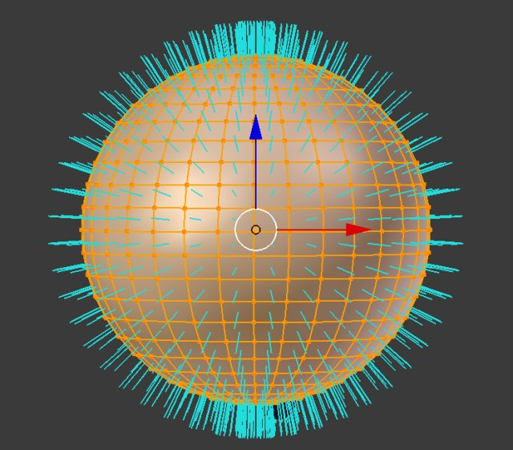
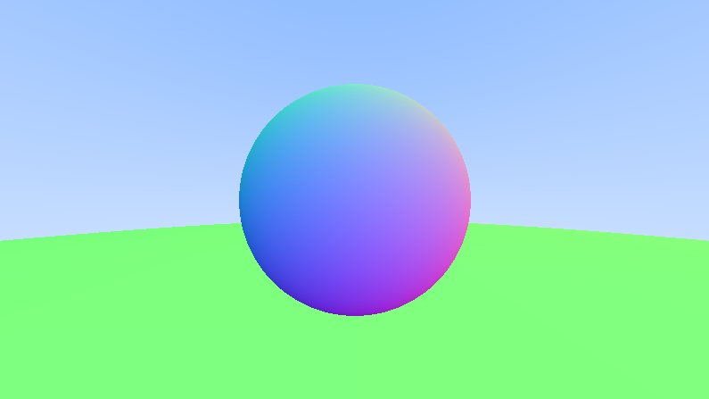

Raytracing in one weekend in c++
GitHub Repository
Part 4
Surface Normal Shading
Normals
The normal vector allows us to know the direction that a surface is facing.
We can make the normal unit length by dividing it by the sphere radius.
For a sphere, the direction of the outward normal is the direction of the hit point minus the center
img. Source
Normal Map : We use the normal vector n normalized ([ -1 ; 1]) and we translate it to a rgb value ([0;255],[0;255],[0;255])
In code it looks a little something like :
Raytracing.cpp
double HitSphere(const Position& rCenter, double radius, const Ray& rRay)
{
Vector3 oC = rRay.GetOrigin() - rCenter;
double a = Dot(rRay.GetDirection(), rRay.GetDirection());
double b = 2.0 * Dot(oC, rRay.GetDirection());
double c = Dot(oC, oC) - radius * radius;
double discriminant = b * b - 4 * a * c;
if (discriminant < 0) return -1.0;
return (-b - sqrt(discriminant)) / (2.0 * a);
}
Color RayColor(const Ray& rRay)
{
double hitTime = HitSphere(Position(0, 0, -1), 0.5, rRay);
if(hitTime > 0.0)
{
Vector3 normal = Unit(rRay.At(hitTime) - Vector3(0, 0, -1));
return 0.5 * Color(normal.x + 1.0, normal.y + 1.0, normal.z + 1.0);
}
Vector3 unitDirection = Unit(rRay.GetDirection());
double blue = 0.5 * (unitDirection.y + 1.0);
return (1.0 - blue) * Color(1.0, 1.0, 1.0) + blue * Color (0, 0, 1.0);
}Simplify the Ray-sphere intersection
We can simplify our discriminant calculation by assuming that : b = 2h
This allows us to get rid of the scalar multiplications.
In code :
We also add that a vector dotted by itself is equal to it's squared length
Raytracing.cpp
double HitSphere(const Position& rCenter, double radius, const Ray& rRay)
{
Vector3 oC = rRay.GetOrigin() - rCenter;
double a = rRay.GetDirection().SquaredLength();
double halfB = Dot(oC, rRay.GetDirection());
double c = oC.SquaredLength() - radius * radius;
double discriminant = halfB*halfB - a * c;
if (discriminant < 0) return -1.0;
return (-halfB - sqrt(discriminant)) / a;
}Abstraction of Hittable Objects
We want to be able to hit more than one objects.
To do that, we will create a new class Hittable to describe anything that can be hit by a ray.
This class will be abstract because each kind of object has to define what being Hit means to them.
We will also add a timeframe within which the ray is "valid" (t has to be between a min and max value).
Hittable.h
#pragma once
#include "Ray.h"
class HitInfo
{
public:
Position coordinates;
Vector3 normal;
double time;
};
class Hittable
{
public:
virtual ~Hittable() = default;
virtual bool Hit(const Ray& rRay, double rayTimeMin, double rayTimeMax, HitInfo& hitInfo) const = 0;
};& The sphere class (Child of Hittable class)
Sphere.h
#pragma once
#include "Hittable.h"
class Sphere: public Hittable
{
private:
Position mCenter;
double mRadius;
public:
Sphere(Position center, double radius):mCenter(center), mRadius(radius){}
bool Hit(const Ray& rRay, double rayTimeMin, double rayTimeMax, HitInfo& hitInfo) const override;
};Sphere.cpp
#include "Sphere.h"
bool Sphere::Hit(const Ray& rRay, double rayTimeMin, double rayTimeMax, HitInfo& hitInfo) const
{
Vector3 oC = rRay.GetOrigin() - mCenter;
double a = rRay.GetDirection().SquaredLength();
double halfB = Dot(oC, rRay.GetDirection());
double c = oC.SquaredLength() - mRadius*mRadius;
double discriminant = halfB * halfB - a * c;
if (discriminant < 0) return false;
double sqrtDiscriminant = sqrt(discriminant);
// Find the nearest root withing the min max time frame
double root = (-halfB - sqrtDiscriminant) / a;
if (root <= rayTimeMin || rayTimeMax <= root) {
root = (-halfB + sqrtDiscriminant) / a;
if (root <= rayTimeMin || rayTimeMax <= root)
return false;
}
hitInfo.time = root;
hitInfo.coordinates = rRay.At(hitInfo.time);
Vector3 outwardNormal = (hitInfo.coordinates - mCenter) / mRadius;
hitInfo.SetFaceNormal(rRay, outwardNormal);
return true;
}Direction of the normals
We have to determine which side of a geometric face we are hitting.
What is interesting to us here is the outward normal. And we can determine if we hit a front face by using the dot product between the ray cast and the normal.
Let's add some info to HitInfo
Hittable.h
class HitInfo
{
public:
Position coordinates;
Vector3 normal;
double time;
bool frontFace;
void SetFaceNormal(const Ray& rRay, const Vector3& outwardNormal)
{
//NOTE : The outwardNormal vector should be unit length
frontFace = Dot(rRay.GetDirection(), outwardNormal) < 0;
normal = frontFace ? outwardNormal : -outwardNormal;
}
};Let finish the Sphere Hit Function
Sphere.h
hitInfo.time = root;
hitInfo.coordinates = rRay.At(root);
Vector3 outwardNormal = (hitInfo.coordinates - mCenter) / mRadius;
hitInfo.SetFaceNormal(rRay, outwardNormal);
return true;Make a list of Hittable Objects
HittableCollection.h
#pragma once
#include "Hittable.h"
#include <memory>
#include <vector>
class HittableCollection : public Hittable
{
private:
std::vector<std::shared_ptr<Hittable>> mPool;
public:
HittableCollection()=default;
HittableCollection(std::shared_ptr<Hittable> hittable) { Add(hittable); }
void Clear() { mPool.clear(); }
void Add(std::shared_ptr<Hittable> hittable) { mPool.push_back(hittable); }
bool Hit(const Ray& rRay, double rayTimeMin, double rayTimeMax, HitInfo& hitInfo) const override;
};HittableCollection.cpp
#include "HittableCollection.h"
using namespace std;
bool HittableCollection::Hit(const Ray& rRay, double rayTimeMin, double rayTimeMax, HitInfo& hitInfo) const
{
HitInfo tempInfo;
bool hasHit = false;
auto closestHit = rayTimeMax;
for (const shared_ptr<Hittable>& hittable : mPool) {
if (hittable->Hit(rRay, rayTimeMin, closestHit, tempInfo)) {
hasHit = true;
closestHit = tempInfo.time;
hitInfo = tempInfo;
}
}
return hasHit;
}Simple Utility File
Utility.h
#pragma once
#include <cmath>
#include <limits>
#include <memory>
#include "Ray.h"
using std::shared_ptr;
using std::make_shared;
using std::sqrt;
const double infinity = std::numeric_limits<double>::infinity();
const double pi = 3,141592653589793238462643383279502884197169; // hehe
inline double DegToRad(double degrees)
{
return degrees * pi / 180.0;
}Fix up the Main
Raytracing.cpp
// Remove HitSphere function
Color RayColor(const Ray& rRay, const Hittable& rWorld)
{
HitInfo hitInfo;
if (rWorld.Hit(rRay, 0, infinity, hitInfo)) {
return 0.5 * (hitInfo.normal + Color(1,1,1));
}
Vector3 unitDirection = Unit(rRay.GetDirection());
double blue = 0.5 * (unitDirection.y + 1.0);
return (1.0 - blue) * Color(1.0, 1.0, 1.0) + blue * Color (0.5, 0.7, 1.0);
}Raytracing.cpp
//Position of the top left pixel
Vector3 viewportOrigin = cameraCenter - Vector3(0, 0, focalLength)
- viewportX / 2 - viewportY / 2;
Vector3 originPixelLocation = viewportOrigin + 0.5 * (pixelDeltaX + pixelDeltaY);
//World
HittableCollection world;
world.Add(make_shared<Sphere>(Position(0,0,-1), 0.5));
world.Add(make_shared<Sphere>(Position(0,-100.5,0), 100));
//Image
cout << "P3\n" << width << ' ' << height << "\n255\n";Raytracing.cpp
for(int y = 0; y < height; y ++)
{
clog << "Progress : " << (y*100/height) << " %\n" << flush;
for (int x = 0; x < width; x ++)
{
Position pixelCenter = originPixelLocation + (x * pixelDeltaX) + (y * pixelDeltaY);
Vector3 direction = pixelCenter - cameraCenter;
Ray ray(cameraCenter, direction);
Color pixel = RayColor(ray, world);
WriteColor(cout, pixel);
}
}Alright now render, and it should look like this :
img. Source
Intervals
We will now implement an interval system.
This is a simple way to describe min and max time frame where the ray is valid and the bounce can be taken into account !
Interval.h
class Interval
{
public:
double min, max;
Interval() : min(+infinity), max(-infinity){} // Default interval is empty
Interval(double pMin, double pMax): min(pMin), max(pMax){}
bool Contains(double x) const
{
return min <= x && x <= max;
}
bool Surrounds(double x) const
{
return min < x && x < max;
}
static const Interval Empty, Universe;
};
const static Interval Empty (+infinity, -infinity);
const static Interval Universe (-infinity, +infinity);
In Headers
Hittable.h
virtual bool Hit(const Ray& rRay, Interval rayTime, HitInfo& hitInfo) const = 0;
HittableCollection.h
bool Hit(const Ray& rRay, Interval rayTime, HitInfo& hitInfo) const override;
Sphere.h
bool Hit(const Ray& rRay, Interval rayTime, HitInfo& hitInfo) const override;
In cpp
HittableCollection.cpp
bool HittableCollection::Hit(const Ray& rRay, Interval rayTime, HitInfo& hitInfo) const
{
HitInfo tempInfo;
bool hasHit = false;
auto closestHit = rayTime.max;
for (const shared_ptr<Hittable>& hittable : mPool) {
if (hittable->Hit(rRay, Interval(rayTime.min , closestHit), tempInfo)) {
hasHit = true;
closestHit = tempInfo.time;
hitInfo = tempInfo;
}
}
return hasHit;
}
Sphere.cpp
bool Sphere::Hit(const Ray& rRay, Interval rayTime, HitInfo& hitInfo) const
{
...
// Find the nearest root withing the min max time frame
double root = (-halfB - sqrtDiscriminant) / a;
if (!rayTime.Surrounds(root)) {
root = (-halfB + sqrtDiscriminant) / a;
if (!rayTime.Surrounds(root))
return false;
}
...
And finally in the main
Raytracing.cpp
Color RayColor(const Ray& rRay, const Hittable& rWorld)
{
HitInfo hitInfo;
if (rWorld.Hit(rRay, Interval(0, infinity), hitInfo)) {
return 0.5 * (hitInfo.normal + Color(1,1,1));
}
Vector3 unitDirection = Unit(rRay.GetDirection());
double blue = 0.5 * (unitDirection.y + 1.0);
return (1.0 - blue) * Color(1.0, 1.0, 1.0) + blue * Color (0.5, 0.7, 1.0);
}